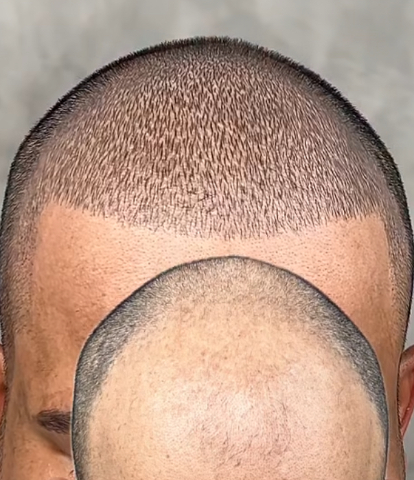

Scalp Micropigmentation (SMP)
Fejbőr pigmentáció – a hajsűrűség optikai növelése
Természetes szépség, tartós eredmény

Az SMP (Scalp Micropigmentation) egy speciális mikropigmentációs eljárás, amely apró pontok segítségével imitálja a hajtüszőket, ezzel sűrűbb haj optikai hatását keltve.
Mit tudhat az SMP?
Kopaszodás és hajritkulás optikai fedése – férfiaknál és nőknél egyaránt
Hajtranszplantáció utáni kiegészítő kezelés a természetesebb megjelenésért
Alopecia (foltos kopaszság) esetén az érintett területek elfedése
Hegek elfedése a fejbőrön – pl. régi sérülések vagy műtéti hegek
Hogyan néz ki az eljárás?
Speciális eszközzel apró, szőrtüsző-szerű pigmentpontokat viszünk fel a fejbőrre
A pigment színe a természetes hajszínhez igazodik – teljesen egyedi, személyre szabott
Az eredmény azonnal látható, a végleges hatás néhány nappal a kezelés után alakul ki
Időpontfoglalás
Szeretne konzultációt vagy időpontot foglalni? Vegye fel velem a kapcsolatot WhatsApp-on vagy telefonon keresztül.
Foglaljon időpontot